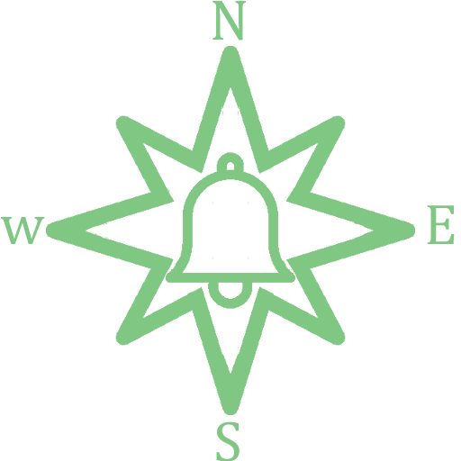

<mat-toolbar class="main-header">
  
  <div class="branding">
    <div class="logo">
      
    </div>
  </div>
  
  <div fxFlex class="myStyle">
    <a [routerLink]="['/admin/type']">Tipos de alarma</a>
    <a [routerLink]="['/admin/users']">Usuarios</a>
  </div>
  <button [matMenuTriggerFor]="user" mat-icon-button class="ml-xs">
    <mat-icon>person</mat-icon>
  </button>
  <mat-menu #user="matMenu" x-position="before">
    <button mat-menu-item>
      <mat-icon>account_box</mat-icon>
      Perfil
    </button>
    <button mat-menu-item (click)="logOut()">
      <mat-icon>exit_to_app</mat-icon>
      Cerrar sesión
    </button>
  </mat-menu>
</mat-toolbar>
